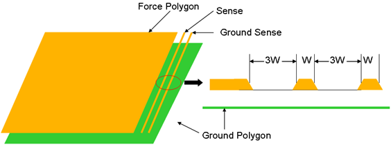
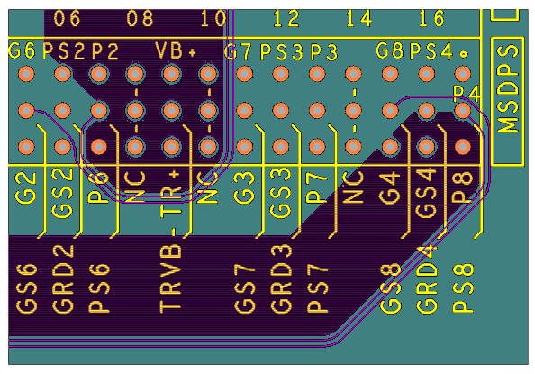
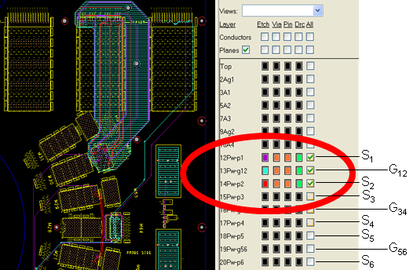

DPS layout rules for high frequency designs
The DPS signal layout of a high frequency DUT board requires special design techniques.
To obtain satisfactory test results, some DPS layout guidelines must be carefully followed. Keep the following rules in mind:
- Route thin Sense lines next to wide Force polygons.
- Tie the Sense lines to Force lines close to DUT.
- Use two adjacent layers to route 'Force', 'Sense', and 'Ground Sense' in the signal layer, and 'Ground' in the next layer.
- Polygons in the two layers should be similarly shaped. The polygon in the ground layer should always cover, or slightly overlay, the area of the three lines in the signal layer.
- Ground Sense follows the Sense line and connects to main GND in the area where the Sense line connects to the Force line.

Example 1: Optimum DPS routing at the DPS block
A horizontal layout structure near a DPS block, as shown in the example graphic below, must be an integral part of a carefully designed Optimum Board Layer Structure stack-up.
For example, you may route every other (that is, every second) DPS signal in Layer 8, followed by a ground layer with similarly shaped and slightly overlapping polygons in Layer 9.
DPS signals left out in the first DPS signal layer are routed in the next signal layer, Layer 10, with differently shaped polygons; followed by appropriate and overlapping ground polygons in Layer 11, and so on.
This way, the return path concept is rigorously followed.

Example 2: Sparing a ground layer in the stack-up
A widely used method to save a ground layer in the stack-up is the design of a ground island polygon as shown in the graphic below.
In that graphic, ground layer G12 follows a similar shape as the "combined" lines of Force, Sense, and Ground Sense in both adjacent signal layers (S1 and S2). The same applies for ground layer G34 and its signal layers S3/S4, or G56 and S5/S6, respectively.
This design saves every other ground layer. The return path concept is still satisfied, since a ground island polygon is placed in at least one of the adjacent layers to each Force, Sense, and Ground Sense structure.

Functional changes
- Introduced in SmarTest 7.1.4